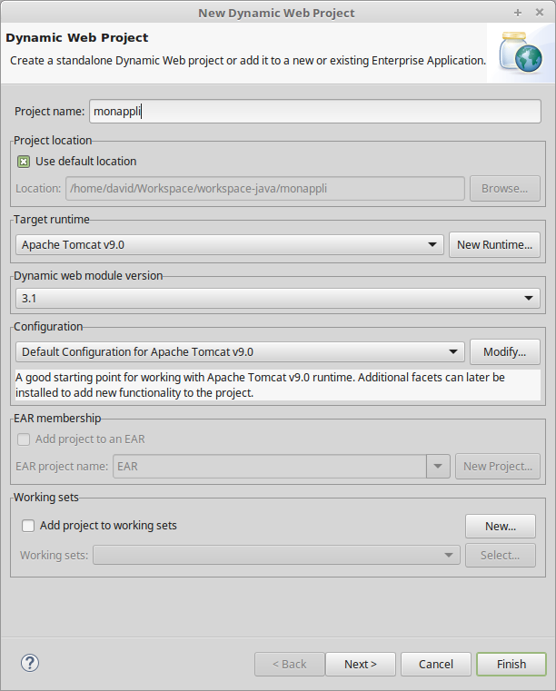
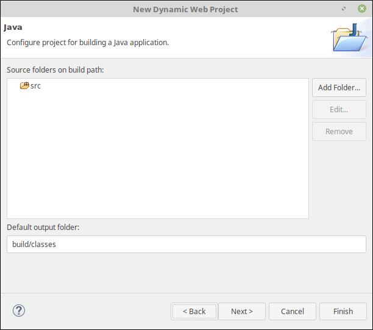
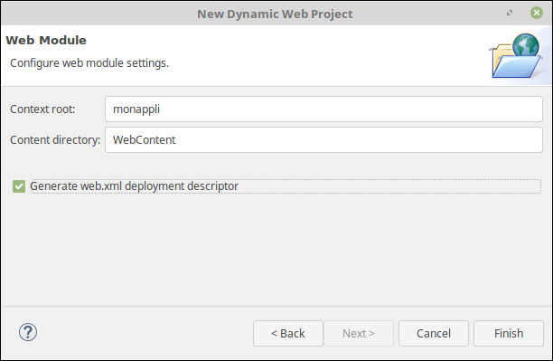
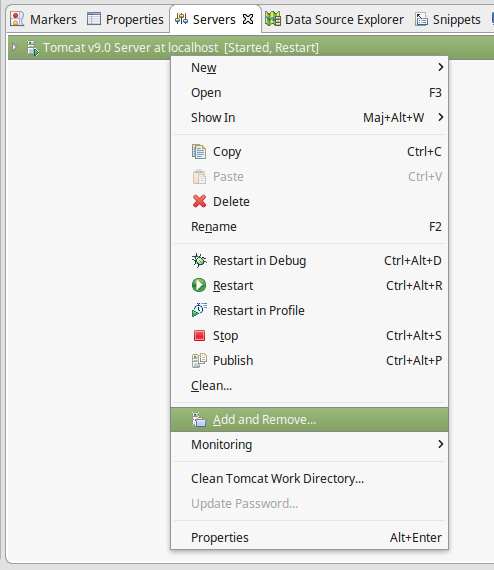

Une première application¶
L’objectif de ce chapitre est de développer une première application Web Java EE sous la forme d’un site avec une page HTML.
Qu’est-ce qu’une application Java EE ?¶
Une application Web Java contient trois types de contenu :
- Les fichiers publics : images, pages HTML, fichiers JavaScript. Il s’agit des fichiers qui sont téléchargés tels quels sur le navigateur client.
- Les ressources dynamiques : il s’agit du code Java (mais pas uniquement) qui est exécuté par le serveur en vue de produire un contenu à renvoyer au client.
- Les fichiers privés : il s’agit la plupart du temps de fichiers de configuration qui sont exploités par le serveur ou les ressources dynamiques et que l’on ne souhaite pas rendre directement accessibles sur le Web
Une application Web Java n’est pas directement exécutable, elle doit être déployée dans un serveur d’application. Le serveur va prendre en charge la réception des requêtes clientes et exécuter le code de l’application en conséquence.
Création d’un projet dans Eclipse¶
Dans Eclipse, sélectionnez File > New > Dynamic Web Project.

Saisissez le nom du projet et vérifiez que le champ Target Runtime est bien positionné sur le serveur que vous avez créé. Cela indique à Eclipse que votre application Web dépend des bibliothèques Java fournies par Wildfly.
Cliquez sur Next.

Eclipse vous propose les répertoires de votre projet qui contiendront les sources Java. Nous n’en aurons pas besoin pour l’instant. Laissez les valeurs par défaut et cliquez sur « Next ».

Pour la dernière étape, cliquez sur la case Generate web.xml deployment descriptor puis cliquez sur Finish.
Déploiement depuis Eclipse et test de l’application¶
Vous disposez maintenant d’un projet dans Eclipse. Ce projet contient un
répertoire WebContent : il s’agit du répertoire racine pour le
contenu des fichiers statiques de l’application.
Ajoutez un fichier HTML dans le répertoire WebContent (clic droit
sur le répertoire puis New > HTML file).
Vous pouvez par exemple créer le fichier hello.html avec le contenu
suivant :
<!DOCTYPE html>
<html>
<head>
<meta charset="UTF-8">
<title>Hello Java EE</title>
</head>
<body>
<p>Hello Java EE</p>
</body>
</html>
Il ne vous reste plus qu’à déployer votre application dans Wildfly. Pour cela, faites un clic droit sur le nom de votre serveur dans la vue Servers et choisissez le menu Add and Remove…. Vous allez pouvoir choisir les applications que vous souhaitez ajouter ou supprimer de votre serveur.

Si cela, n’est pas déjà fait, il vous reste encore à démarrer votre serveur.
Votre application est maintenant déployée et vous pouvez accéder au fichier depuis votre navigateur Web à l’adresse : http://localhost:8080/monappli/hello.html
Le contexte racine de déploiement (root context)¶
Un serveur d’application peut abriter plusieurs applications. Au moment du déploiement, on indique au serveur le contexte racine de déploiement de l’application. Il s’agit du chemin dans l’URL à partir duquel le serveur identifie l’application à laquelle un client souhaite accéder.
Lorsque vous développez sous Eclipse, le contexte racine par défaut est tout simplement le nom du projet. Ainsi dans votre serveur de test, l’URL de base à partir de laquelle vous accédez à votre application est : http://localhost:8080/[nom du projet]
Packaging de l’application¶
Imaginons que votre application est maintenant terminée et que vous souhaitez la distribuer ou la livrer pour une mise en production.
Une application Web Java EE possède un format de distribution particulier : le format WAR (pour Web ARchive).
Vous allez maintenant générer un fichier WAR à partir d’Eclipse. Pour cela, faites un clic droit sur votre projet puis Export > WAR file. Sélectionnez une destination pour la sauvegarde du fichier et cliquez sur Finish.
Félicitation, vous venez de développer et de créer un format livrable pour votre première application Java EE !
Regardons maintenant plus en détail ce que contient ce fichier WAR. Un fichier WAR est en fait une archive ZIP. Il est donc très facile de regarder son contenu :

Nous retrouvons le fichier hello.html qui a été ajouté à l’application. Mais nous découvrons surtout l’arborescence standardisée d’un fichier WAR :
- META-INF
- Ce répertoire contient les meta-informations décrivant le livrable. Il contient en général au moins le fichier MANIFEST.MF qui donne des informations générales : nom du package, auteur, date de création… Ce répertoire est optionnel.
- WEB-INF
- Ce répertoire correspond à la section privée de l’application. Il contient le code de l’application ainsi que les fichiers de configuration. Le contenu de ce répertoire n’est pas accessible depuis l’extérieur. Faites le test en tentant de visualiser le fichier web.xml à l’adresse http://localhost:8080/monappli/WEB-INF/web.xml. Vous obtenez un code erreur 404 (NOT FOUND). Le fichier est bien présent mais le serveur refuse de répondre à cette adresse !
- WEB-INF/web.xml
- LE fichier de déploiement de l’application Web ! Il fournit des informations au serveur d’application au moment du démarrage de l’application. L’application que nous avons développé était tellement simple que nous n’avons pas eu à nous en préoccuper pour l’instant.
- WEB-INF/classes
- Ce répertoire accueille les fichiers Java compilés (les fichiers .class). Comme nous n’avons pas écrit de code pour notre application, ce répertoire est vide.
- WEB-INF/lib
- Ce répertoire accueille les bibliothèques Java (les fichiers .jar) externes qui sont nécessaires à l’application. Nous verrons que le serveur d’application fournit déjà de nombreuses bibliothèques qu’il ne faut SURTOUT pas incorporer au livrable. Pour toutes les autres, c’est dans ce répertoire qu’elles doivent être placées.
Note
web.xml obligatoire ou pas ?
Depuis Java EE 6, le fichier de déploiement web.xml n’est plus obligatoire. Cependant, certains outils de développement considèrent encore l’absence de ce fichier comme une erreur. Il est donc préférable de toujours l’ajouter. Voilà pourquoi, il vous a été demandé de cocher la case « Generate web.xml deployment descriptor » au moment de la création du projet.